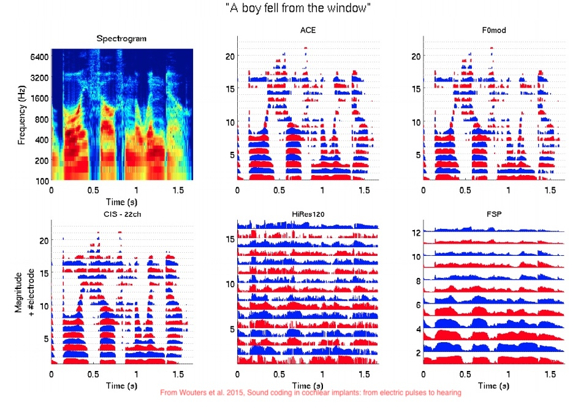
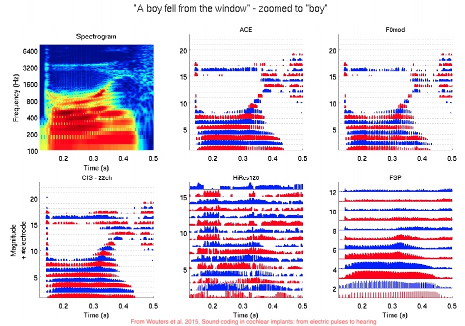
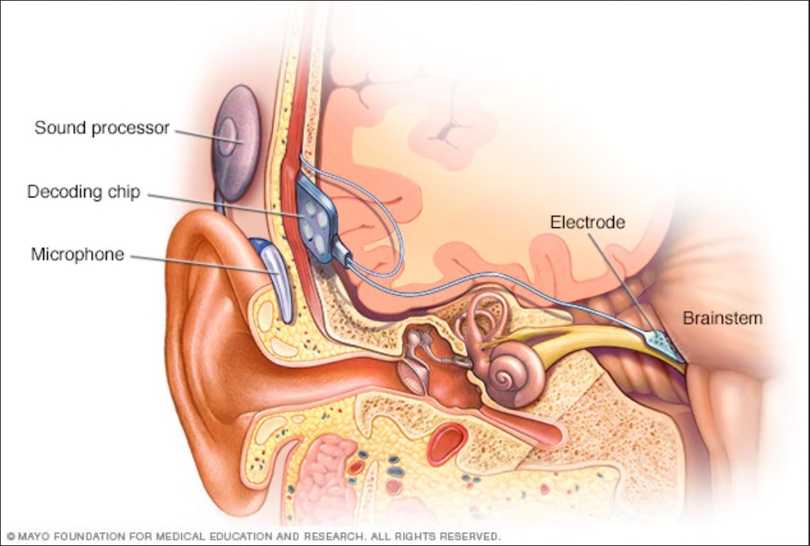
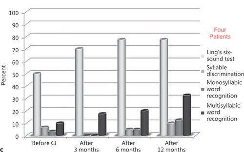

(The acoustic nerve is like) very limp spaghetti. The brain is like a thick jelly, the Spinal cord like chewed bubble gum, and the nerve roots are like overcooked spaghetti. - Dr. Frank Farokhi
CI Review
CI Processing Strategies
What about auditory brainstem implants?
What is CI hearing like?

“How do we turn the continous spectrum of sound into pulses on a fixed number of electrode channels?”
There are many different processing algorithms
Things like CIS, ACE, HiRes120
These are chosen by the patient and their audiologist
Many devices can be adjusted to use a new or different one
Each one uses different methods to transform sounds into a pulse train on the electrodes
They are severely constrained by real-time running, battery life and processing power
Take the input signal
Do an FFT (or use a bank of band-pass filters)
Take the ‘spectral envelope’ for each band
Now use those envelopes to decide the pulses sent to electrodes

Do the thing above, choosing the same number of bands as you have electrodes
Every electrode gets activated, one after the other, in a fixed sequence
Do the thing above, choosing the same number of bands as you have electrodes
Choose the N highest amplitude bands (often 8-10) and stimulate only those electrodes
The person is given only the loudest bands, more often
This keeps neighboring electrodes from interfering with each other
Dedicating some channels to ‘temporal fine structure’ (e.g. voice pulses)
‘Virtual channels’
(The following figures are from Wouters et al. 2015, Sound coding in cochlear implants: from electric pulses to hearing


This is an active area of research!
New encoders can mean major improvements for hearing
This is the ‘software’ that allows the machine to optimally mesh with the mind
Continuous spectrum -> 22 channels
The dynamic range is very small (~10 dB)
The frequency range can be much smaller
Masking effects can be complete within bands
Fine temporal information goes away
Pinna cues aren’t preserved
Lack of frequency resolution
Positioning of microphone
Interaural time and amplitude differences can disappear too!
The two ears aren’t always on the same clock cycles
Amplitude differences are subtle and can be squashed
Many people have just one CI
Really, REALLY different
‘Simulating’ CI hearing is not possible
You can distort sound into 22 bands, but that’s not really the same thing
… but it can be a useful abstraction for raising awareness
‘The Sound of Metal’ does this well
It’s a bit generous, and includes different numbers of channels, but gives a sense of what to expect.
Computationally-mediated nerve stimulation
The fact that it’s happening in the cochlea is a matter of convenience
Could we do this same sort of stimulation, on other nerves?
Yes!

Turn audio into bands
Turn bands into pulses
Put pulses on nerves
Let the brain sort it out
They just differ in deployment
ABIs work even when the 8th nerve is damaged beyond the cochlea
The surgery is far more invasive
So, if you can go the CI route, they’re usually a better choice than ABIs
‘Turning it on’ immediately gives sensation of sound
“There is more noise now than before”
“Huh, beep”
… but then the work starts!
Different processing strategies
Different settings
Number of simultaneous bands
Pulse rate
Different ‘loudness’ by frequency
Your brain needs to (re-)learn how to model the world from these pulses
Tonotopic organization helps, but the signal is still fundamentally different
Neuroplasticity plays a big role here
How do we want to evaluate outcomes for people?
What matters most when evaluating CI ‘effectiveness’?
All of this varies greatly from person to person!
Massive success!
“Huh, beep” perception is more or less universal
Yes!
“How well can the different channels be discriminated?”
Channel 2 may not ‘sound’ reliably different from channel 3
Channel 2+3 may not sound different from 2 or 3
Channels 2 and 5 may even be hard to tell apart
Not all channels may be available to all people
Children with profound hearing impairment who received cochlear implants performed equally to children with severe hearing impairment treated with hearing aids on half of the performance tests. - de Kleijn et al. 2018
All patients showed hearing improvement over time. Aided thresholds improved significantly (p < 0.01) from a mean of 62.3 dB HL with the preimplant hearing aid to a mean of 39.2 dB HL at 3 months after implantation and 36.3 dB HL at 12 months after implantation (fig. 1). - Lachowska et al. 2015

Fig 3: Lachowska et al. 2015
Music appreciation is generally very hard for CI users
Identifying specific auditory patterns (e.g. birdsongs, or differing tone patterns) may be very difficult
Much of ‘natural noise’ is missing or distorted
The story varies!
Pre-lingually deafened adults don’t generally learn to recognize words
For post-lingually deafened adults, ~35-45% correct words and 65-80% sentence scores



Children range from ~4-75% accuracy on words, and around 61% accuracy for sentences
Word-in-isolation and sentence scores don’t account for context
This is not natural hearing, but it’s not nothing!
Background noise complicates perception substantially
CIs can be amazing in quiet rooms, but useless at parties
‘The Sound of Steel’ did an amazing job capturing this
The first subgroup of implanted elderly (6 patients, 20%) - showing very good benefits - also displayed very good perception of spoken language through the auditory-sensory modality with familiar and unfamiliar speakers without assistance from lipreading, and with a little help from lipreading in noisy environments. Most of them were able to have a conversation over the phone. After implantation, these elderly became more active in everyday life, often met with neighbors and friends, and were open to meet new people. The mean implant-aided free-field audiometric threshold was <30 dB HL. The oldest patient was 87 years old. - Lachowska et al. 2015
The second subgroup of implanted elderly (20 patients, 67%) showing good benefits - also demonstrated good perception of spoken language through the auditory-sensory modality with a little help from lipreading. The cochlear implant provided better communication and enabled improved contact with other people leading to increased independence in everyday life. Their mean implant-aided free-field audiometric threshold was between 30 and 50 dB HL. The oldest patient was 87 years old. - Lachowska et al. 2015
In a survey of over 20,000 deaf children implanted since 2000, 47 percent had stopped using their CI
CIs are never like natural hearing
CIs are an amazing choice for some
They’re a minor improvement for others
They’re useless or harmful for others still
This is a medical intervention with potential risks and rewards, not a ‘sure thing’
Most people will have some sensation of sound from them
Some people gain the ability to speak and understand spoken language
Improvements to lip-reading ability may also improve quality of spoken perception
The ‘option’ to hear can be situationally useful

“CIs will fix your deaf child and let them lead a normal life!”
“With CIs, your child won’t need to resort to signed language!”
“If you can afford CIs for your children, not doing so is neglectful!”
“In the worst case, they can just learn sign and join the deaf community!”
Each one of these statements is problematic!
Bicultural/Bilingual approaches
CIs targeted for environmental awareness only
Use of these implants as tools
The best approach is what’s best for the individual!
CIs can be a life-changing enhancement, providing the ability to hear and understand speech
CIs can also be a spectacular waste of $30,000-60,000 dollars, which don’t merit continued use
There’s relatively little indication as to which people will have which experience
There’s no harm in teaching and learning sign
‘Going all in’ on CIs and Spoken language is unwise
There’s some indication that early sign exposure improves outcomes for spoken language with CIs
You can’t guarantee a good outcome from the CIs, and language deprivation is a major risk
Attitudes like “CIs are always bad and getting them makes you bad” are equally unwise
Your role is to give choices and information, grounded in science and data
Cochlear Implants stimulate the nerves directly based on incoming audio
Processing algorithms turn sound into stimulation
ABIs work the same way, but deeper down the nerve!
CI-mediated hearing is not the same as natural hearing
There’s massive variability in outcomes from person to person
What questions remain?
‘What was the most interesting thing you learned this quarter?’
Wrapping up the course
de Kleijn JL, van Kalmthout LWM, van der Vossen MJB, Vonck BMD, Topsakal V, Bruijnzeel H. Identification of Pure-Tone Audiologic Thresholds for Pediatric Cochlear Implant Candidacy: A Systematic Review. JAMA Otolaryngol Head Neck Surg. 2018;144(7):630–638. doi:10.1001/jamaoto.2018.0652
Lachowska M, Pastuszka A, Glinka P, Niemczyk K. Benefits of cochlear implantation in deafened adults. Audiol Neurootol. 2014;19 Suppl 1:40-4. doi: 10.1159/000371609. Epub 2015 Feb 20. PMID: 25733366.